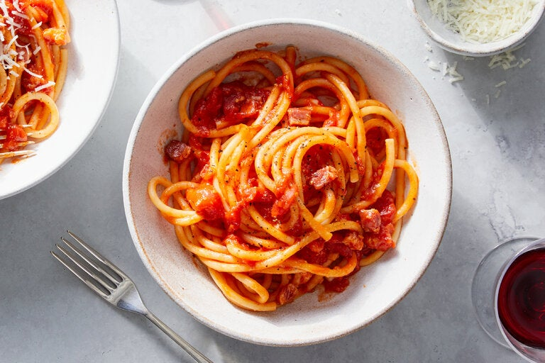

Pasta Amatriciana

Ingredients
- 2 tablespoons olive oil
- ¾ cup guanciale (chopped)
- ¼ cup white dry wine
- 1 can peeled tomatoes
- 1-2 dashes pinches hot pepper flakes or black pepper
- 4-5 tablespoons freshly grated pecorino cheese
- 300 grams dry pasta
Steps
- In a large pot of salted boiling water cook the pasta until very al dente.
- In a medium pan add the olive oil and guanciale, cook until golden. When starting to turn golden add the wine and cook on high heat for 1-2 minutes until the alcohol has evaporated. Remove the guanciale and liquid from the pan to a clean bowl.
- To the empty pan add a tablespoon of olive oil, the tomatoes lightly crushed, hot pepper flakes or pepper and 2-3 tablespoons of the liquid from the cooked guanciale. Cook on medium high until thickened.
- Then and 2-3 tablespoons pasta water, the al dente pasta and cook on medium-high tossing for two minutes. Add the hot pepper flakes or black pepper, an extra tablespoon or two of pasta water and grated pecorino continue to cook tossing constantly until creamy, approximately one minute. Serve immediately with extra pecorino if desired.